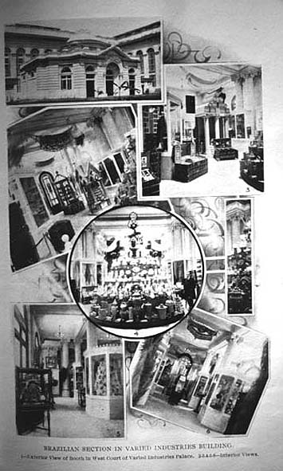

|
|  |
|
Brazil at the Louisiana Purchase Exhibition, 1904
|
To forge an image of their countries as 'civilised', the Argentine, Brazilian and Chilean pavilions at the great exhibitions therefore not only featured the primary resources that made up the lion´s share of their exports to the industrialised world, but they also displayed items of industrial manufacture and works of art: all these were now a measure of the degree of 'progress' achieved in comparison to other countries in the 'concert of nations'. Thus 'progress' and 'civilisation' became, like money, a universal signifier, a measuring scale of universal equivalence that superseded local histories and cultural forms (exhibited, however, as 'curiosities' and 'exotica' –that is, as anachronisms– in the 'colonial' sections of the great exhibition).
|